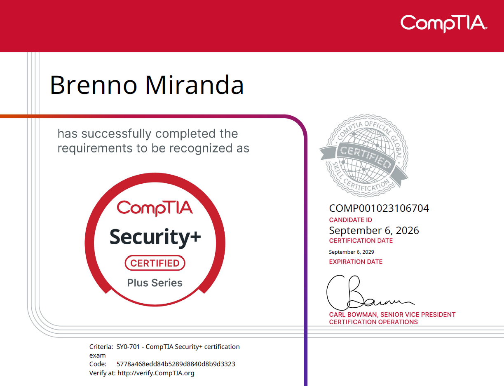

A Security+, ofertada pela CompTIA, é a certificação de entrada mais reconhecida do mercado de segurança da informação. Ela é agnóstica de fornecedor e cobre uma base ampla: conceitos fundamentais de segurança, ameaças e vulnerabilidades, arquitetura, operações de segurança e governança, risco e conformidade (GRC). É também a certificação usada como baseline por boa parte das vagas de SOC, blue team e analista de segurança júnior no Brasil e no exterior.
No dia 06/09/2026, realizei a prova, sendo aprovado.

Temas cobrados
A versão vigente do exame é a SY0-701, dividida em cinco domínios com pesos distintos. Os temas cobrados em cada um são:
- General Security Concepts (12%)
- Tipos e categorias de controles de segurança (técnico, gerencial, operacional, físico / preventivo, dissuasivo, detectivo, corretivo, compensatório, diretivo)
- Conceitos fundamentais: tríade CIA, não repúdio, AAA, gap analysis e Zero Trust
- Segurança física e processos de change management
- Soluções criptográficas: PKI, certificados, hashing, assinatura digital, TPM, HSM e ofuscação
- Threats, Vulnerabilities, and Mitigations (22%)
- Threat actors, motivações e níveis de sofisticação
- Vetores de ataque e superfícies de exposição
- Vulnerabilidades em aplicação, sistema operacional, nuvem, mobile, supply chain e virtualização
- Indicadores de atividade maliciosa: malware, ataques de rede, engenharia social e ataques criptográficos
- Técnicas de mitigação e hardening
- Security Architecture (18%)
- Modelos de arquitetura: cloud, IaC, serverless, microsserviços, SDN, on-premises e IoT/SCADA/ICS
- Segurança de infraestrutura: segmentação, firewalls, IDS/IPS, WAF, VPN, proxies e SASE
- Proteção de dados: classificação, criptografia, DLP, tokenização e masking
- Resiliência e recuperação: alta disponibilidade, backups, sites alternativos, RTO/RPO e testes de continuidade
- Security Operations (28%)
- Hardening de endpoints, servidores, mobile e dispositivos de rede
- Gestão de ativos de hardware, software e dados
- Gestão de vulnerabilidades: scanning, CVSS, CVE, priorização e remediação
- Monitoramento e alerta: SIEM, SNMP, NetFlow, agentes e antivírus
- Identidade e acesso: SSO, LDAP, SAML, OAuth, MFA, PAM e modelos de autorização
- Automação e orquestração (SOAR) em operações seguras
- Resposta a incidentes: preparação, detecção, contenção, erradicação, recuperação e lições aprendidas
- Fontes de dados para investigação: logs, dashboards, pacotes e artefatos forenses
- Security Program Management and Oversight (20%)
- Governança: políticas, padrões, procedimentos, papéis e estruturas de decisão
- Gestão de risco: identificação, análise qualitativa e quantitativa (SLE, ALE, ARO), tratamento e risk register
- Risco de terceiros: due diligence, SLA, MOU, MSA, BPA e avaliação de fornecedores
- Compliance: privacidade, consequências do não cumprimento, monitoramento e atestação
- Auditorias e assessments: interno, externo, pentest e regras de engajamento
- Security awareness: phishing simulado, comportamento anômalo e treinamento contínuo
Sobre o exame
Trata-se de uma prova com no máximo 90 questões e 90 minutos de duração, combinando questões de múltipla escolha com PBQs (Performance-Based Questions), simulações interativas em que o candidato precisa configurar regras de firewall, correlacionar logs, classificar ataques a partir de evidências ou associar controles a cenários. A nota de corte é 750 pontos em uma escala de 100 a 900. Não existe "aprovado com mérito": o resultado é apenas aprovado ou reprovado, com o score exibido na tela ao final.As PBQs apareceram logo no início da minha prova e foram o principal fator de pressão de tempo: cada uma me consumiu entre 5 e 10 minutos. Marquei todas para revisão, respondi primeiro as múltiplas escolhas e só voltei às simulações com o tempo que sobrou. Foi o que me impediu de perder questões fáceis por falta de tempo.
A CompTIA recomenda como pré-requisito informal a Network+ somada a cerca de dois anos de experiência em administração de sistemas ou segurança. Não é obrigatório, mas a base de redes faz diferença real: boa parte de Security Architecture e Security Operations assume que você entende sub-redes, portas, protocolos e fluxo de tráfego.
O exame pode ser feito em centro autorizado Pearson VUE ou de forma remota (online proctored). No formato remoto, é exigido acesso à câmera e ao microfone, verificação do ambiente físico e o desktop precisa estar totalmente limpo. O voucher custa em torno de US$ 425 no preço de lista, com valores menores via revendedores autorizados e bundles com material oficial. A certificação tem validade de 3 anos e pode ser renovada por dois caminhos. O primeiro é acumular 50 CEUs ao longo do ciclo, sujeito à taxa anual de manutenção. O segundo é passar em uma certificação CompTIA de nível superior dentro do mesmo ciclo de três anos, como CySA+, PenTest+ ou SecurityX: nesse caso a renovação é automática, a taxa de manutenção da Security+ é dispensada e a validade passa a acompanhar a data da nova certificação.
Um ponto de atenção sobre o calendário: a SY0-701 é a versão vigente, e a CompTIA já sinalizou a chegada da SY0-801 para o fim de 2026 / início de 2027, com o inglês da 701 previsto para se aposentar em junho de 2027. Quem já está estudando pela 701 não tem motivo para esperar: a certificação obtida vale integralmente pelos mesmos 3 anos, independentemente da versão do exame.
Como a prova cobra
A dificuldade da Security+ está na amplitude, não na profundidade técnica. São centenas de siglas, controles, frameworks e protocolos, cobrados em questões escritas em formato de cenário. A pergunta quase nunca é "o que é X?", e sim "dada esta situação, qual a MELHOR ação/controle/ferramenta?".Os padrões que mais pesaram na minha prova, e que recomendo internalizar antes de prestar o exame:
- Palavras-chave em maiúsculo (BEST, MOST, FIRST, MOST likely) mudam completamente a resposta. Frequentemente há duas ou três alternativas tecnicamente corretas, e só uma é a melhor para o contexto descrito.
- Pense como a CompTIA, não como o mundo real. A resposta esperada é a que segue processo e boas práticas do material oficial, não o atalho que funcionaria no seu ambiente.
- Elimine antes de escolher. Descartar duas alternativas foi mais rápido e confiável, para mim, do que tentar justificar a correta de imediato.
- Decore o essencial: portas e protocolos comuns, ordem das fases de resposta a incidentes, diferença entre os tipos e categorias de controles, e as fórmulas de risco (SLE = AV × EF, ALE = SLE × ARO). São pontos garantidos.
- Cuidado com termos parecidos: autenticação × autorização × accounting, vulnerabilidade × ameaça × risco, IDS × IPS, RTO × RPO × MTTR × MTBF, SAML × OAuth × OpenID Connect.
- Simulados são obrigatórios. Mais do que revisar conteúdo, eles treinam a leitura do enunciado e o ritmo de ~1 minuto por questão. Só agendei a prova depois de atingir consistentemente mais de 85% nos simulados.
A RouteSec na minha aprovação
O curso da RouteSec, do Hugo B., foi o material que sustentou a minha preparação. Usei outras fontes em paralelo, mas foi ele que deu estrutura ao estudo: os cinco domínios seguem a ordem dos objetivos oficiais, em português, e nenhum é tratado superficialmente por ser menos técnico. GRC, risco de terceiros e resposta a incidentes são justamente os tópicos que mais aparecem na prova e os que a maioria dos cursos trata como apêndice.Os simulados foram o fator decisivo. As questões seguem o mesmo formato da prova real: enunciado em cenário, palavra-chave em maiúsculo, duas ou três alternativas plausíveis e uma única melhor resposta. As PBQs do curso também se aproximam bastante das que aparecem no exame, o que reduz o impacto do primeiro contato com uma simulação interativa cronometrada. Cheguei ao centro da Pearson VUE sem nenhuma surpresa quanto ao formato, e o nível de dificuldade que eu vinha encontrando nos simulados correspondeu ao da prova.
Para quem estuda em português e procura um percurso único, do zero até o agendamento, é o material que eu recomendo.
Referências de estudo para o exame
- RouteSec – Hugo B. (pago) | https://app.routesec.site/
- MyFree Academy – Security+ Certification Prep | https://www.youtube.com/playlist?list=PLPgV_umjzuLbzdEIiPmqsPfbvKJIGyrRL
- Cyber James – CompTIA Security+ | https://www.youtube.com/playlist?list=PLIsEyzUoUVmBJk0ZqxExnII_3Ac38Coet
- Professor Messer – SY0-701 Training Course | https://www.youtube.com/playlist?list=PLG49S3nxzAnl4QDVqK-hOnoqcSKEIDDuv
- Professor Messer – Course Notes e Study Groups | https://www.professormesser.com/security-plus/sy0-701/
- MITRE ATT&CK | https://attack.mitre.org/